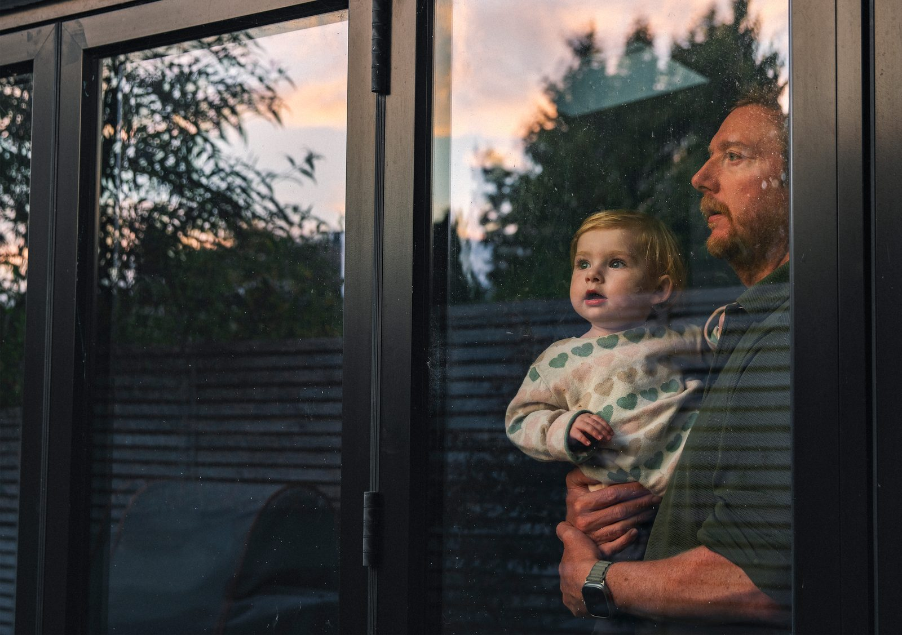
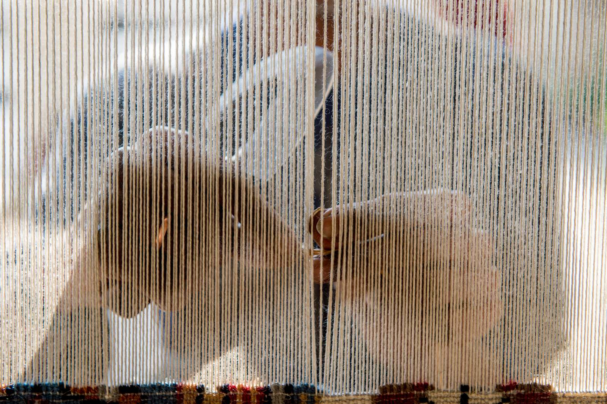

Gallery grid
The Gallery grid — a page-level photography wall, in canon's gallery role: tile radius, the ruled caption block, and no squaring pass unless you ask for a square bottom edge. The dials below are the ruled ones for this type, working, so a
designer can drive them; the preview and the export block are rendered in the same pass
from the same state object, so the export cannot describe a combination you did not
see.
⛔ Ruled behaviour only. The five open points
s217-D5 leaves unruled (P1–P5) live on the
Bento matrix explorer, which is their decision surface. Nothing on
this page is proposed, and nothing on it is promoted.
GALLERY — a page-level photography wall, all 15
committed derivatives. Gallery bento uses canon's span grid with the bottom
edge ragged or squared; Justified rows uses the row packing from
gen_gallery_compare_217.pack_rows — the same arithmetic, imported.
The RADIUS sits on the tiles and the ruled caption block is 86px
(s217-D3). ⚠ In the console theme this type has no keyline
control at all — s217-D6 excludes it, so the group is REMOVED from
the page rather than disabled.


s200-D1), no var() chain.
What this page is, and is not
- Nothing is re-drawn and nothing is re-derived. The content, the spans, the
packing and the corner rules all come from
knowledge/_render/gen_bento_matrix_217.py— the same modules the matrix explorer renders from, consumed rather than copied. One data path, one maths. - No bento structure is declared here. The grid, the span vocabulary, the
responsive bands, the three role rules and the caption space are canon's
(
s217-D2/s217-D3). This type renders as canon'sgalleryrole, which is what makes every radius and spacing decision on the page canon's own rule resolving. - No colour is authored. Every ground is
--surface-subtle,--surface-raisedor nothing at all; the controller chrome is neutral.